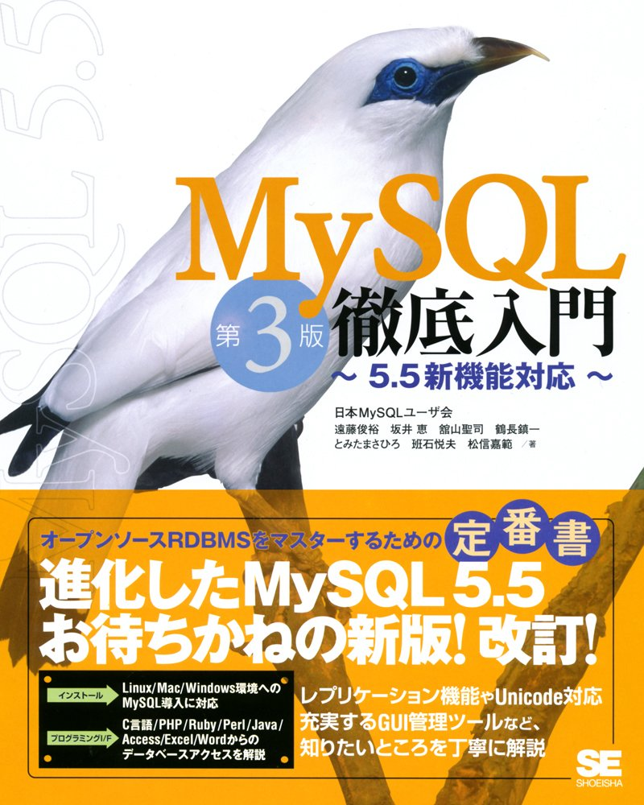
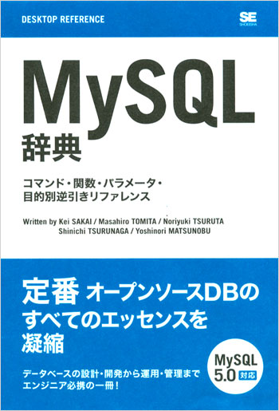
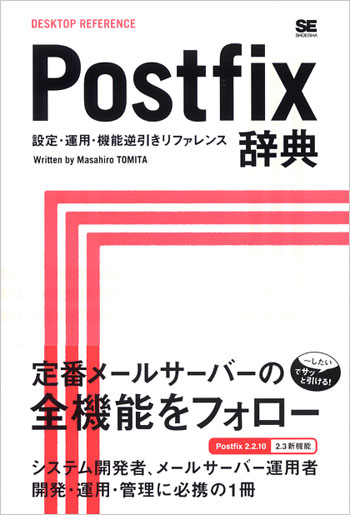
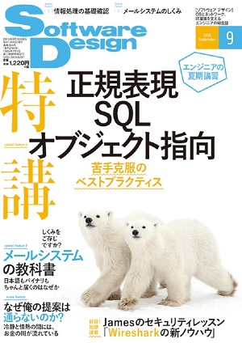
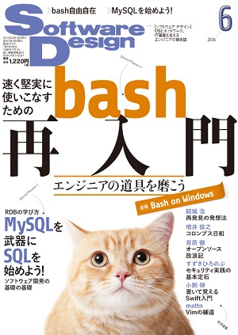
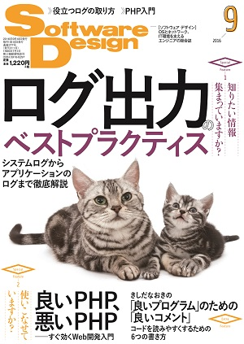
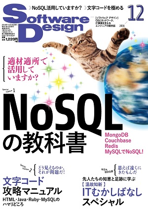
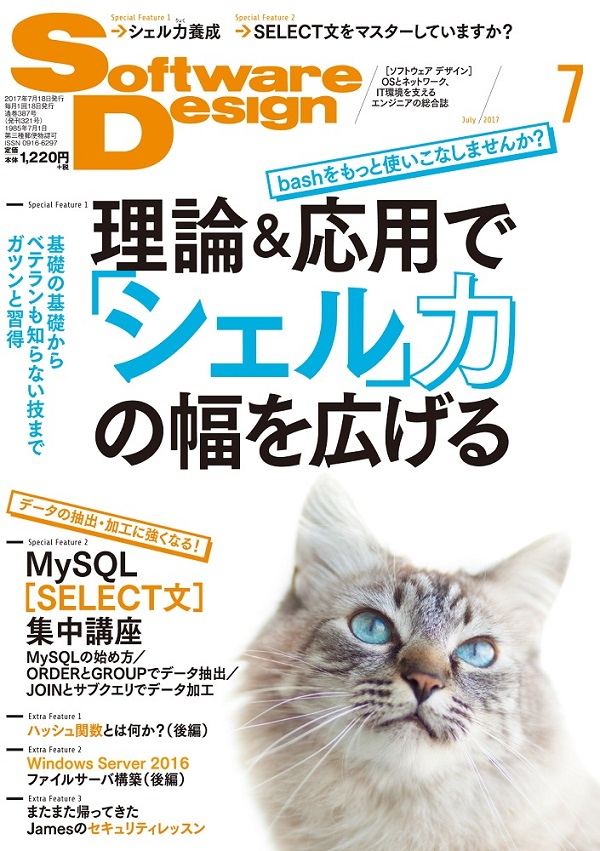

OSS貢献者賞

2013
とみたまさひろ
2019-07-20
nagano.rb #2
OSS貢献者賞
2013
書籍執筆
  
2000-2011 / 2007 / 2006
雑誌寄稿
    
201509 / 201606 / 201609 / 201612 / 201707
作者が日本人
広く世界で使われている言語で
作者が日本人というのはあんまりない
日本人利用者も多い
日本語のドキュメントが多い
コミッターにも日本人が多い
世界最大の国際Rubyカンファレンス
http://rubykaigi.org
国内で国際カンファレンスに参加できる
2016年から地方開催
2016 京都市
2017 広島市
2018 仙台市
2019 福岡市
4/9 - 11
初の県庁所在地以外開催
長野市涙目 (;_;)
2019福岡ではなんと県知事が登壇
http://www.pref.fukuoka.lg.jp/contents/rubykaigi2019.html
長野県どーする!?
アルクマ来ないかな
スクリプト言語とは、プログラミング言語のうち、プログラムの記述や実行を比較的簡易に行うことができる言語の総称である。
要するにプログラムを書いてサクッと実行できる
明にコンパイル作業が必要なものはスクリプトとは呼ばない(たぶん)
echo 123
echo 456 > # error
echo 789
% bash hoge.sh
123
hoge.sh: 行 3: 予期しないトークン `newline' 周辺に構文エラーがあります
hoge.sh: 行 3: `echo 456 > # error'
文法エラーがあっても途中まで実行される
p 123
p 456 _ # error
p 789
% ruby hoge.rb
hoge.rb:2: syntax error, unexpected tIDENTIFIER, expecting end-of-input
p 456 _ # error
文法エラーがあったら実行されない
オブジェクト指向とは、コンピュータプログラムの設計や実装についての考え方の一つで、互いに密接に関連するデータと手続き（処理手順）をオブジェクト（object）と呼ばれる一つのまとまりとして定義し、様々なオブジェクトを組み合わせて関連性や相互作用を記述していくことによりシステム全体を構築していく手法。
strlen("HOGE"); //=> 4
"HOGE".length #=> 4
Rubyの「オブジェクト指向」は
これくらいの理解でいいような気がする
# クラス定義
class Hoge
# 初期化
def initialize(arg)
@arg = arg # インスタンス変数に引数を記憶
end
# 初期化時に渡された引数を表示
def fuga
puts @arg
end
end
hoge = Hoge.new("abc") # Hogeクラスのオブジェクト生成
hoge.fuga # "abc"が出力される
hoge!
hoge?
isHoge()みたいな強制ではないけど倣っといた方が無難
数値 / 文字列 / シンボル / 配列
ture / false / nil 等々
オブジェクトではない基本型(プリミティブ型)
というものは無い
false, nil だけが偽
その他の値(オブジェクト)はすべて真
123.class #=> Integer
"Hoge".class #=> String
:sym.class #=> Symbol
[1,2,3].class #=> Array
true.class #=> TrueClass
false.class #=> FalseClass
nil.class #=> NilClass
クラスはClassクラスのオブジェクト
class B < A
end
B.class #=> Class
B.superclass #=> A
B = Class.new(A)
↑と↓は同じ
class B < A; end
def hoge
end
hoge # …として参照するとメソッド呼び出し
残念
methodメソッドはメソッドをMethodオブジェクト化する
m = method(:hoge)
p m
#=> #<Method: main.hoge>
1 + 2 * 3 #=> 7
↑は↓と同じ
1.+(2.*(3)) #=> 7
# 各要素に対して繰り返し
array.each do |e|
...
end
# 指定回数繰り返し
5.times do |i|
...
end
# ブロック終了時にファイルをクローズ
File.open("filename.txt") do |f|
f.read
...
end
def each
yield(x) # ブロックを引数xで実行
end
# ブロックをオブジェクトとして受け取る
def each(&block)
block.call(x) # ブロックを引数xで実行
sub(&block) # 他のメソッドに渡す
block.class #=> Proc
end
a = proc{|a, b| ... } # 引数省略可
b = lambda{|a, b| ... } # 引数省略不可
c = ->(a, b){ ... } # lambda{|a, b| ... } と同じ
5.times(&a)
変数 / 引数 / メソッドの戻り値に型がない
def hoge
var = 123
var = "hoge" if rand > 0.5
return var
end
class Integer
def hoge
"hoge" * self
end
end
5.hoge #=> "hogehogehogehogehoge"
5 + 10 #=> 15
class Integer
def +(other)
self * other
end
end
5 + 10 #=> 50
class Integer
alias orig_plus +
def +(other)
if rand > 0.5
self.orig_plus(other)
else
self * other
end
end
end
5 + 10 #=> 15
5 + 10 #=> 50
5 + 10 #=> 15
5 + 10 #=> 15
5 + 10 #=> 50
動的にメソッド定義
class Hoge
def hoge(p1, p2)
end
end
↑と↓は同じ
class Hoge
define_method(:hoge) do |p1, p2|
end
end
メソッド名を動的に定義できる
class Hoge
def method_missing(name, *args)
super if name == :hoge # hogeメソッドはエラー
puts "#{name} が引数 #{args.inspect} で呼ばれた"
end
end
Hoge.new.fuga(1, 2, 3)
#=> fuga が引数 [1, 2, 3] で呼ばれた
Hoge.new.hoge
#=> NoMethodError (undefined method `hoge' for #<Hoge:0x000055dd5bef3b50>)
文字列をRubyプログラムとしてその場で評価
str = "def hoge(a, b); end"
eval str
"㋿".unicode_normalize(:nfkd) #=> "令和"
Rubyの言語仕様策定において最も重視しているのはストレスなくプログラミングを楽しむことである (enjoy programming)
TMTOWTDI
There’s More Than One Way To Do It.
Perlのスローガン
同じことをするのに複数の方法がある
Rubyで明に言われているわけではない
「自分の足を撃つ自由」
Rubocop http://docs.rubocop.org
静的チェックツール
主にスタイルチェック
Metrixとかセキュリティのチェックとかも
「Ruby 3 は Ruby 2.0 より3倍速くする」
RubyKaigi 2015 で Matz が宣言
なにかしらの型チェック機構が入りそう
RubyKaigi 2019 でもいくつか発表
2020/12/25 リリース
(たぶん)